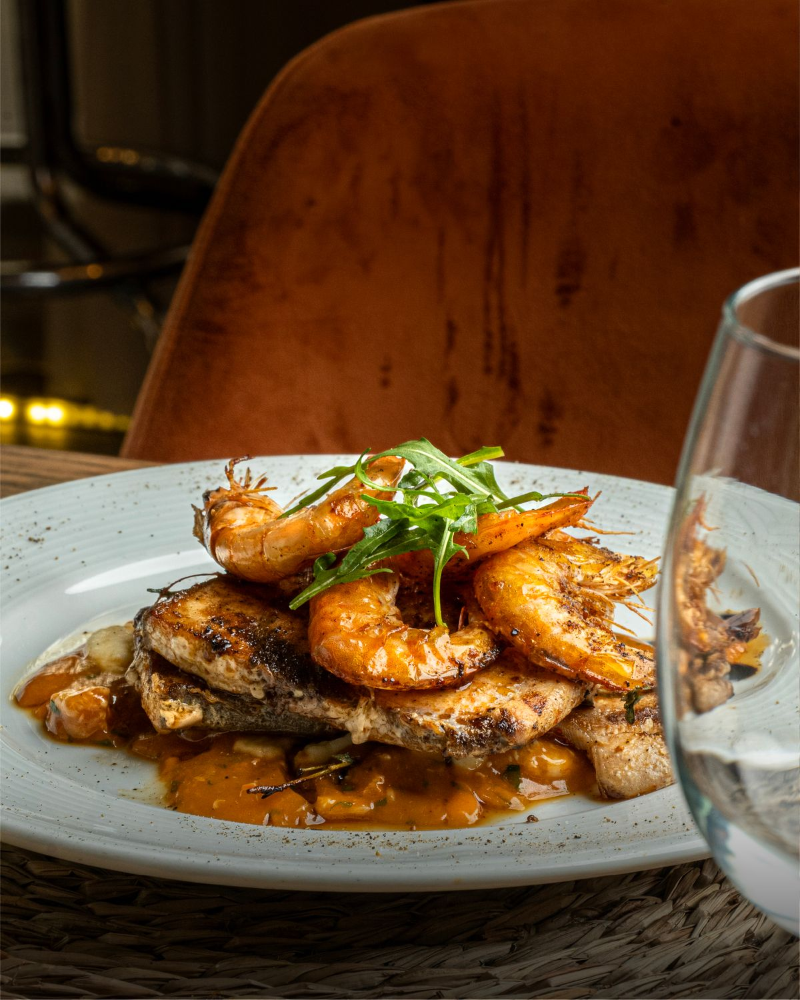
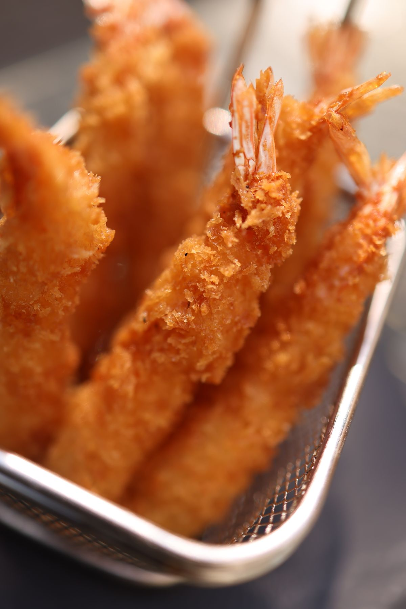
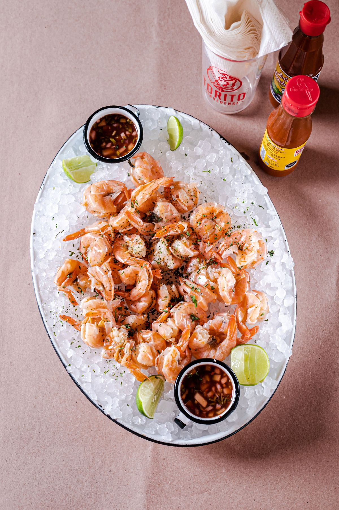
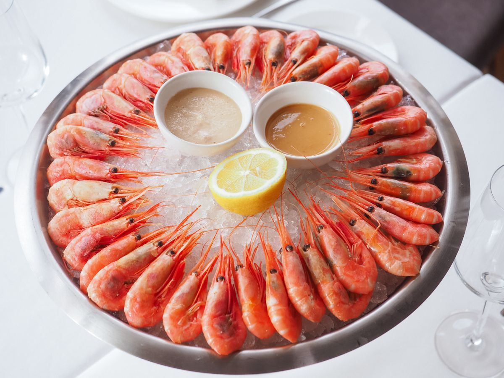

Coconut shrimp
Coconut shrimp from the beachfront seafood menu.
Bahama Bob's Beach Side Cafe
Gulf Shores, Alabama
Bahama Bob's Beach Side Cafe is a beachfront seafood, American, bar and grill restaurant in Gulf Shores, Alabama, with a full bar serving tropical cocktails.
Rated 4.7 from 42 Google reviews.
Call to book: (251) 948-2100
Coconut shrimp from the beachfront seafood menu.
The Bahama Bob Burger, a house burger.
The Fried Captain's Platter of fried seafood.



All photos on this page are stock photos, not photos of this business.
601 W Beach Blvd, Gulf Shores, AL 36542
Plan a visitCall: (251) 948-2100